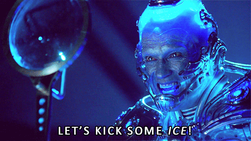

Managing your environment
Trying to avoid ‘it works on my machine’
12 March 2026
Storytime #1
- Ronald worked on a project last year. He did some quick analysis and saved his scripts.
- He’s revisiting the project now but the code isn’t running because one of the functions has now been deprecated.
Storytime #2
- Freud’s finished working on a data pipeline! It runs on his machine.
- However his colleague Pavlova can’t run it on her laptop because she don’t know what package versions she needs to install.
Steps
There’s plenty to discuss, but we’ll focus on:
- Basic portability
- Environment managers
- Containers
Roughly: ‘the least you can do right now’ to ‘probably the best choice long-term’.
Step 1: portability
- Can you ‘lift and shift’ your whole, discrete project?
- Does the recipient have everything they need?
- Consider IDE-specific helpers (VS Code Workspaces, R Projects)
Step 1: portability
Helpers for Python:
os.path.join for OS-agnostic filepaths.env files and the dotenv package for environment variables
For R:
Step 2: environment managers
- Record language and package versions at a specific time.
- Like a time capsule, “freeze” your programming environment.

Step 2: environment managers
For Python:
For R:
Step 3: containers
- Docker 🐳 / nix ({rix} for R)
- Recreates the WHOLE MACHINE, not just the environment!
- Docker creates a temporary virtual computer with the sole purpose of running your script
What are you trying to achieve?
Do you want to make your project:
- work right now on someone else’s machine?
- work reliably again in future?
- easier to work with collaboratively?
Bottom line:
- you have to make conscious decisions
- different projects need different solutions